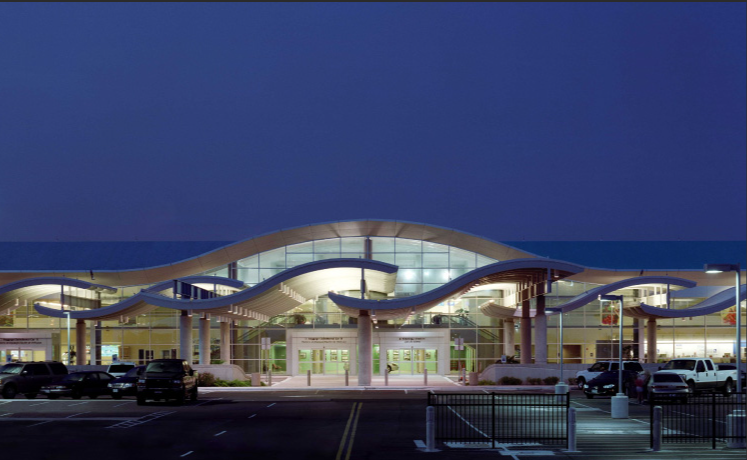

Corpus Christi International Airport (CRP)

Above: Corpus Christi International Airport
Corpus Christi International Airport (CRP) is a public airport located in Corpus Christi, Texas, serving the coastal region of South Texas. The airport provides regional passenger service and connects travelers to larger airports and destinations throughout the United States.
CRP has a passenger terminal with dining options, rental car services, parking, and other traveler amenities. The airport is an important transportation hub for Corpus Christi and the surrounding coastal communities.